組み立て(Jetson)
| 画像 | パーツ名 | 個数 |
|---|---|---|
 |
Jetson Nano 4GB | １ケ |
 |
WiFi Module(8265 | 1式 |
| 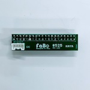 | 拡張ボード | 1ケ |
| 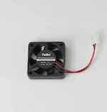 | CPU Fan | 1ケ |
| ⑤Jetson固定ネジ | 1式 | |
| ⑥CPU Fan固定ネジ | 1式 | |
| 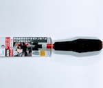 | +1x75ドライバー | １ケ |
 |
精密ドライバーセット | １ケ |
アンテナの設置
1x75ドライバーをつかってJetso Moduleを取り外します。
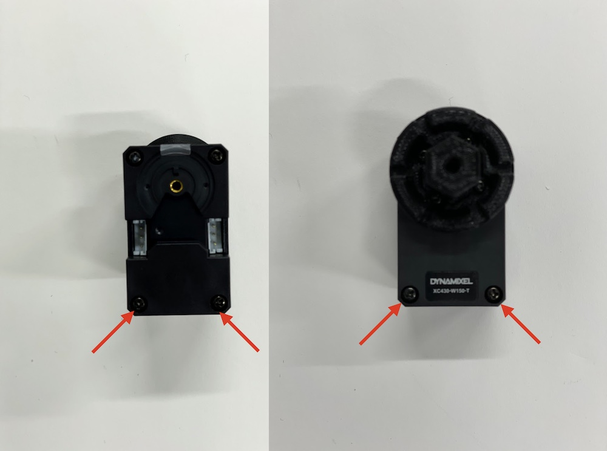


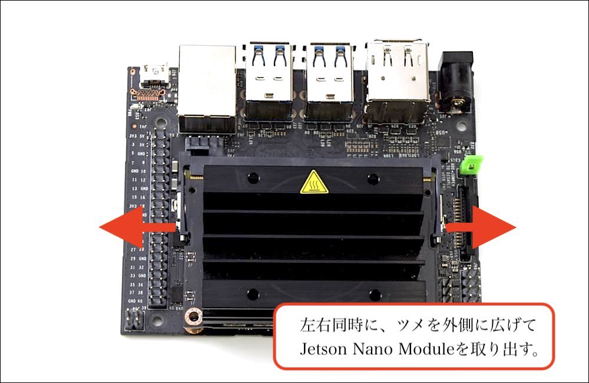


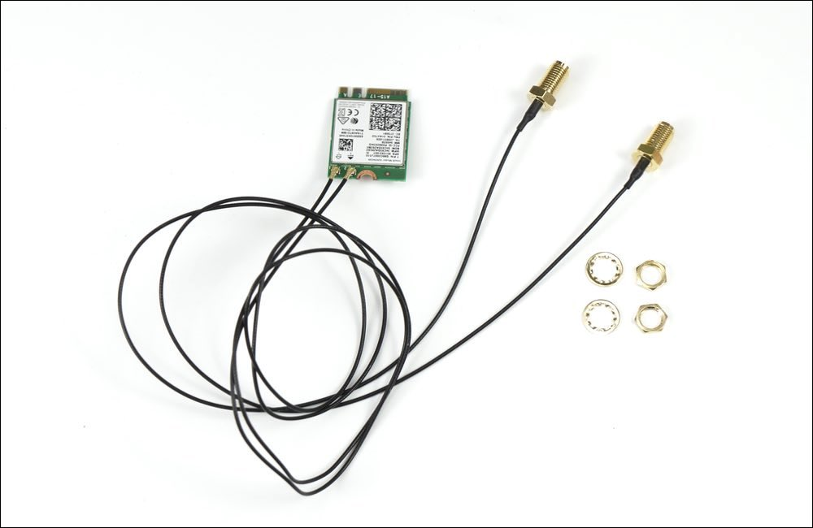


Jetsonの固定
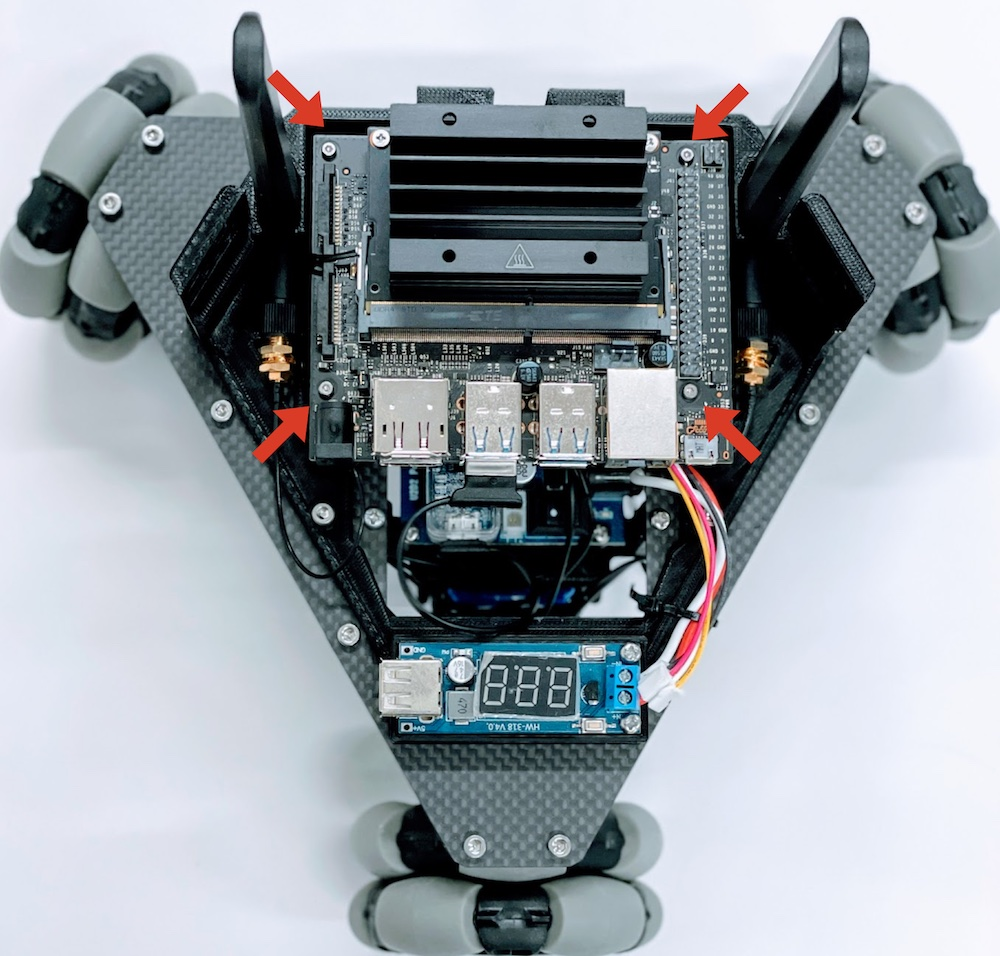
Jumper Pin
JumperPinをショートさせる事で、DCジャックから電源供給が可能になります。

CPU Fanの取り付け

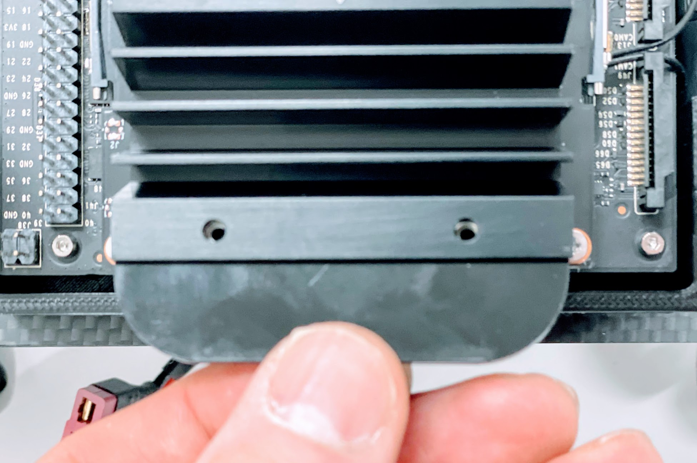


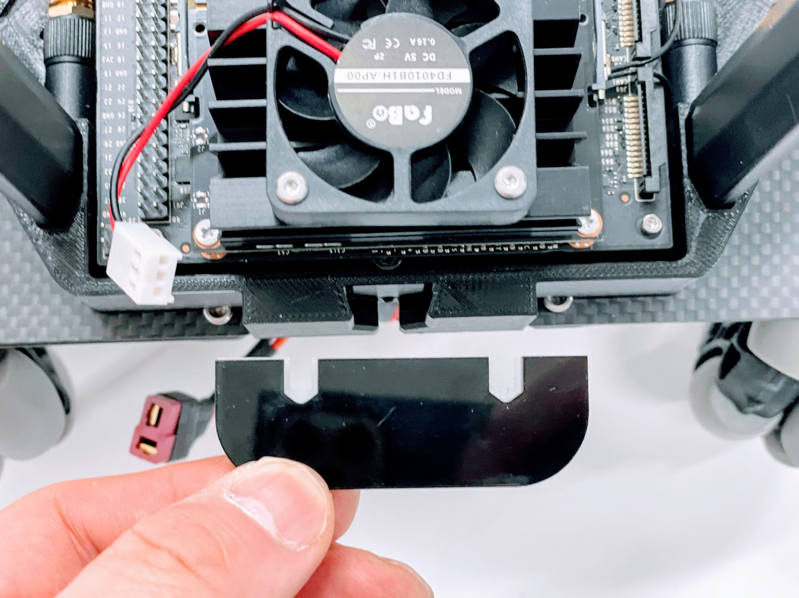
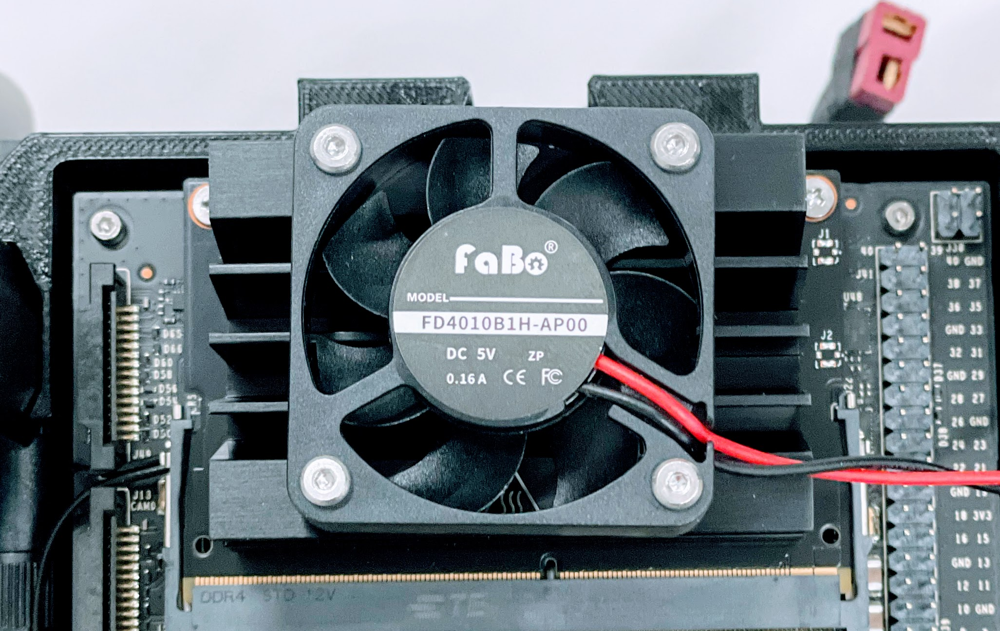
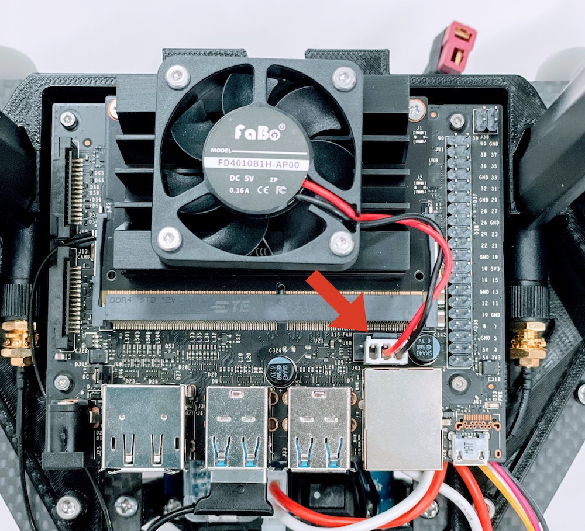
I2C用拡張ボードの取り付け
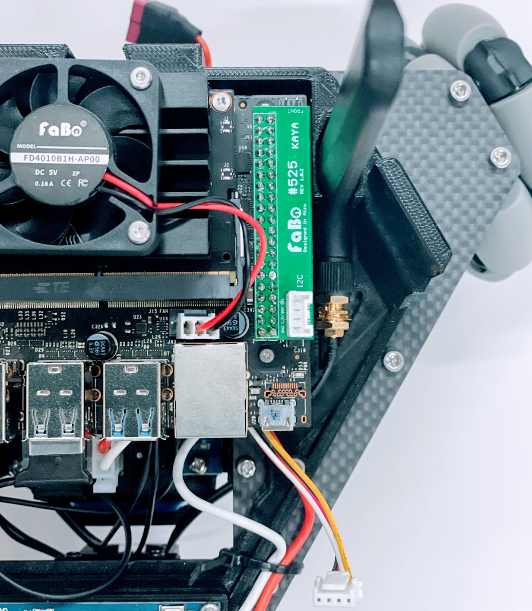